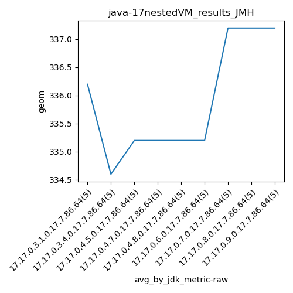

java-17 JMH
Context at bottom
/home/jvanek/git/benchmarks-in-nested-virtualisation-toolchain/final_results/nestedVM_results/nestedVM_results_J2DBENCH
java-17
JMH
/home/jvanek/git/benchmarks-in-nested-virtualisation-toolchain/final_results/nestedVM_results/nestedVM_results_RADARGUNs3
java-17
JMH
/home/jvanek/git/benchmarks-in-nested-virtualisation-toolchain/final_results/nestedVM_results/nestedVM_results_DACAPO
java-17
JMH
/home/jvanek/git/benchmarks-in-nested-virtualisation-toolchain/final_results/nestedVM_results/nestedVM_results_JMH
java-17
JMH
nestedVM_results_JMH
final score
Expected number of java-17 JDKs: 9
1st avgmed_alljdks_metric:
/home/jvanek/git/benchmarks-in-nested-virtualisation-toolchain/final_results/result_processing.py /home/jvanek/git/benchmarks-in-nested-virtualisation-toolchain/final_results/nestedVM_results/nestedVM_results_JMH geom False
values: [338, 335, 336, 336, 336, 335, 335, 334, 335, 334, 336, 333, 335, 336, 336, 332, 335, 336, 337, 336, 335, 335, 337, 335, 334, 336, 336, 334, 335, 335, 336, 339, 338, 336, 337, 337, 337, 337, 337, 338, 336, 338, 335, 340, 337]

Expected number of iterations: 5
final number of values: 45 out of 45
Pass rate: 100.0%
values: (332, 340, 335.9111111111111, 336)

** accuracy from all jdks and runs
more is better
MIN: 332
MAX: 340
AVG: 335.9111111111111
MED: 336
Relative differences 1:
MIN-MAX: 2.0 %
MIN-AVG: 1.0 %
MIN-MED: 1.0 %
MAX-MIN: -2.0 %
MAX-AVG: -1.0 %
MAX-MED: -1.0 %
AVG-MED: 0.0 %
stored to java-17.properties. sort | uniq that!
2nd avgmed_by_jdk_metric:
values: [336.2, 334.6, 335.2, 335.2, 335.2, 335.2, 337.2, 337.2, 337.2]

values: [336, 335, 336, 336, 335, 335, 337, 337, 337]

values: (334.6, 337.2, 335.9111111111111, 335.2)
values: (335, 337, 336.0, 336)

** accuracy from all jdks where runs were avged
more is better
MIN: 334.6
MAX: 337.2
AVG: 335.9111111111111
MED: 335.2
Relative differences 1:
MIN-MAX: 1.0 %
MIN-AVG: 0.0 %
MIN-MED: 0.0 %
MAX-MIN: -1.0 %
MAX-AVG: -0.0 %
MAX-MED: -1.0 %
AVG-MED: -0.0 %
stored to java-17.properties. sort | uniq that!
** accuracy from all jdks where runs were medianed
more is better
MIN: 335
MAX: 337
AVG: 336.0
MED: 336
Relative differences 1:
MIN-MAX: 1.0 %
MIN-AVG: 0.0 %
MIN-MED: 0.0 %
MAX-MIN: -1.0 %
MAX-AVG: -0.0 %
MAX-MED: -0.0 %
AVG-MED: -0.0 %
stored to java-17.properties. sort | uniq that!
/home/jvanek/git/benchmarks-in-nested-virtualisation-toolchain/final_results/nestedVM_results/nestedVM_results_SPECJBB
java-17
JMH
/home/jvanek/git/benchmarks-in-nested-virtualisation-toolchain/final_results/nestedVM_results/nestedVM_results_RADARGUNs1
java-17
JMH
pass rates:
nestedVM_results_JMH=100.0%
Context:
- nestedVM_results
- JMH